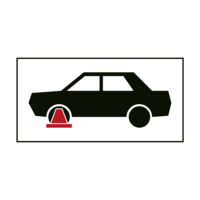
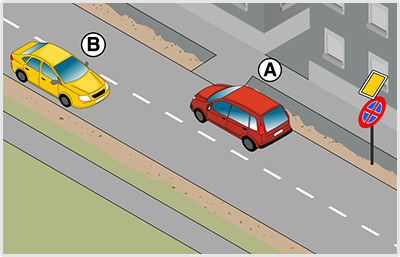

- 156. Milyen okból szabad megállni a jelzőtáblát követően? #703443
- Forgalmi vagy műszaki okból.
- Csak műszaki okból.
- Csak forgalmi okból.

- 157. Mit jelent ez a közúti jelzés? #703448
- A várakozás ellenőrző óra vagy jegykiadó automata működtetésével engedélyezett.
- A várakozás csak ellenőrző óra működtetésével engedélyezett.
- A várakozás csak jegykiadó automata működtetésével engedélyezett.

- 158. Szabad-e gépjárművel várakozni 12:00 órakor a jelzőtáblát követő 20 m-en belül? #703449
- Igen, ha a járművezető a járműnél marad, és áruszállító jármű érkezésekor a rakodóhelyet haladéktalanul szabaddá teszi.
- Nem.
- Igen, feltétel nélkül.

- 159. Mit jelent ez a közúti jelzés? #703450
- A szabálytalanul várakozó járművet elszállíthatják.
- Műszaki hibás járművek várakozóhelyét jelzi.
- A szabálytalanul megálló járművet elszállíthatják.

- 160. Mire utal ez a kiegészítő tábla? #703451
- Arra, hogy a várakozási szabályokat megszegő járművet kerékbilincs alkalmazásával rögzíthetik.
- Arra, hogy a járművet elszállíthatják.
- Arra, hogy a járművet bármikor rögzíthetik kerékbilinccsel.

- 161. Mit jelent ez a közúti jelzés? #703452
- Az úttesten kívül az útpadkán is tilos a megállás és a várakozás.
- Az úttesten kívül a leállósávon is tilos a megállás és a várakozás.
- Az útpadkán és a leállósávon tilos a megállás és a várakozás.
- 162. Az út mely részére vonatkozik a jelzőtáblával jelzett tilalom? #703453
- Az úttestre.
- Az úttestre és az útpadkára.
- Az úttestre és a járdára.

- 163. Az út mely részére vonatkozik a jelzőtáblával jelzett tilalom? #703454
- Az úttestre.
- Az úttestre és az útpadkára.
- Az úttestre és a járdára.
- 164. Szabad-e személygépkocsival várakozni e közúti jelzést követően? #703478
- Igen, ha a járművezető a járműnél marad, és áruszállító jármű érkezésekor a rakodóhelyet haladéktalanul szabaddá teszi.
- Igen, ha legalább egy utas a járműnél marad, és áruszállító jármű érkezésekor értesíti a vezetőt.
- Nem.
- 165. Szabad-e személygépkocsival várakozni e közúti jelzést követően? #703479
- Igen, a kiegészítő tábla szerinti feltételekkel.
- Igen, korlátozás nélkül.
- Nem.
- 166. Az út mely részére vonatkozik a jelzőtáblával jelzett tilalom? #703480
- Az úttestre.
- Az úttestre és az útpadkára egyaránt.
- Az úttestre, az útpadkára és a leállósávra egyaránt.
- 167. Az ábrán látható jelzőtábla hatálya a következő útkereszteződésig tart, kivéve, ha... #703613
- a jelzőtábla alatt elhelyezett kiegészítő tábla ennél rövidebb távolságot jelöl meg.
- útburkolati jelből más következik.
- a megállás szabályaiból más következik.
- 168. Az ábrán látható jelzőtábla hatálya a következő útkereszteződésig tart, kivéve, ha... #703614
- ellentétes értelmű jelzőtábla a tilalmat előbb feloldja.
- útburkolati jelből más következik.
- a megállás szabályaiból más következik.
- 169. Kétkerekű segédmotoros kerékpárral szabad-e megállni a járdán e jelzőtáblát követően? #703615
- Igen, amennyiben fennállnak a segédmotoros kerékpárral járdán való megállással kapcsolatos egyéb feltételek.
- Nem.
- Csak akkor, ha közúti jelzés ezt lehetővé teszi.
- 170. Kétkerekű segédmotoros kerékpárral szabad-e várakozni a járdán e jelzőtáblát követően? #703616
- Igen, amennyiben fennállnak a segédmotoros kerékpárral járdán való várakozással kapcsolatos egyéb feltételek.
- Nem.
- Csak akkor, ha közúti jelzés ezt lehetővé teszi.
- 171. Mit tilt az ábrán látható jelzőtábla? #703617
- A megállást és a várakozást.
- Csak a megállást.
- Csak a várakozást.
- 172. Mit tilt az ábrán látható jelzőtábla? #703618
- A várakozást.
- A megállást és a várakozást.
- A megállást.
- 173. Szabad-e segédmotoros kerékpárral az úttesten megállni e jelzőtáblát követően? #703619
- Nem.
- Igen, az egy nyomon haladó segédmotoros kerékpárral.
- Igen.
- 174. Szabad-e segédmotoros kerékpárral az úttesten várakozni e jelzőtáblát követően? #703620
- Nem.
- Igen, az egy nyomon haladó segédmotoros kerékpárral.
- Igen.

- 175. Ön az ’A’ jelű gépkocsival a képen látható helyen megállt. Mikor szabályos ez? #715138
- Ha a megállásra műszaki hiba miatt került sor.
- Ha utasa itt szeretne kiszállni.
- Ha az ábrán látható házban lakik, és az erről szóló igazolást elhelyezi a gépkocsi szélvédője mögé.
- 176. Szabályosan tartózkodik-e egyhelyben az ábrán látható ’A’ jelű gépkocsi? #715139
- Nem.
- Csak akkor, ha a megállás nem tart 5 percnél tovább.
- Csak akkor, ha az utasa itt szeretne kiszállni.
- 177. Őrizetlenül hagyhatja-e járművét az ’A’ jelű gépkocsi vezetője az ábrán látható helyen? #715140
- Nem.
- Igen, mert az úttesten nincs záróvonal felfestve.
- Maximum 5 percig.